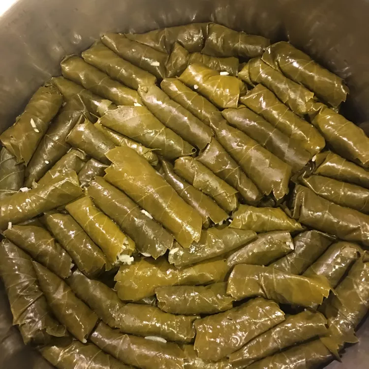

Stuffed Leaves

Description
These grape leaves are stuffed with a tantalizing mixture of lemony rice and fresh herbs.
"Yum" is the only word to describe them! Serve them as an appetizer, or as a main dish paired with crusty bread and a Greek salad.
Ingredients
- Olive oil
- White rice
- Grape leaves
Steps
- Heat olive oil in a large saucepan over medium-high heat. Add rice, onion, dill, and mint; sauté until onion is soft, about 5 minutes. Pour in 1/2 of the broth, reduce the heat to low, and simmer until rice is almost cooked through, 10 to 15 minutes. Stir in 1/2 of the lemon juice and remove from the heat.
- Plunge grape leaves into a deep container of very hot water until soft, about 10 seconds; pat dry.
- Place a grape leaf onto a work surface with the shiny side facing down. Place 1 teaspoon rice mixture on leaf at the stem end; fold both sides in toward the center and roll up from the wide bottom to the top. Place stuffed leaf into a 4-quart pot. Repeat to stuff remaining leaves, packing them into the pot tightly so they don't open while cooking.